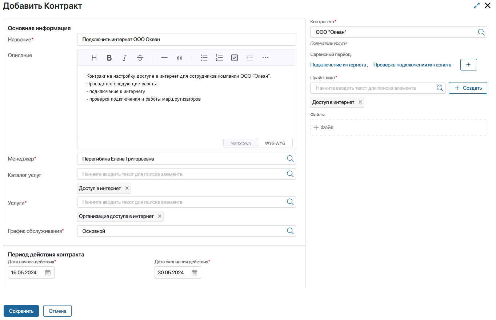
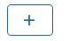
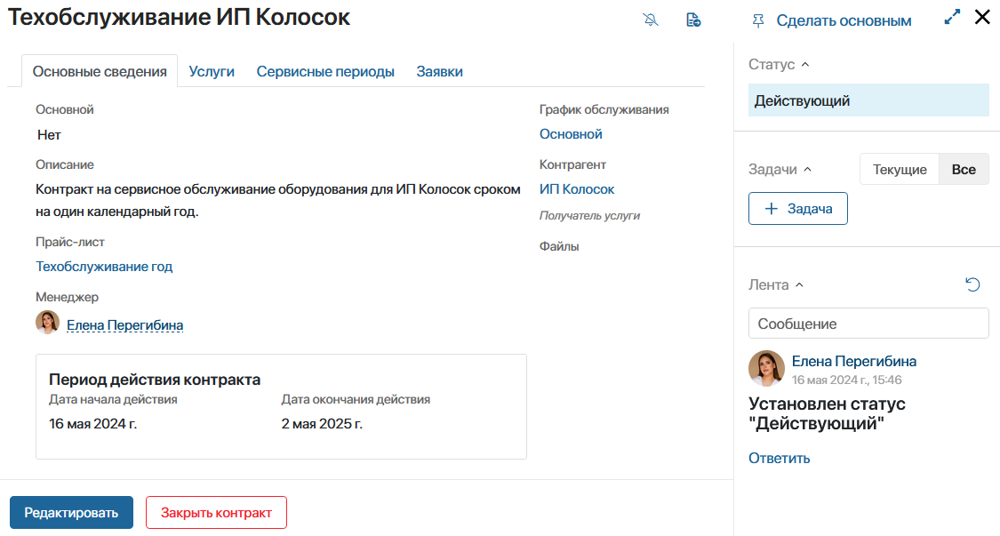
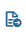
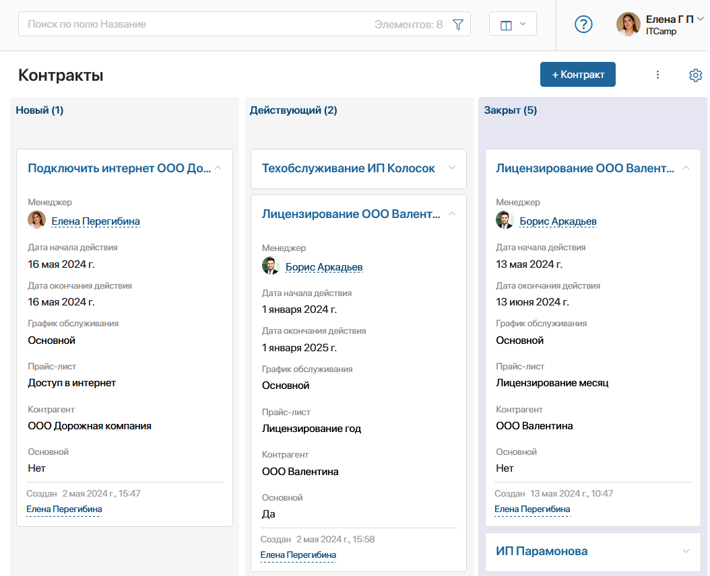

Основное приложение, которое используется для управления стоимостью услуг — Контракты.
Контракт фиксирует стоимость услуги и необходимых работ для её предоставления, а также регулирует порядок и срок сервисного обслуживания клиента.
Когда клиент решает подать заявку, менеджер должен создать контракт. В нём указывается: услуга и её прайс-лист, виды работ, их стоимость и сроки проведения, период действия контракта. Таким образом в контракте рассчитывается полная стоимость оказания клиенту определённой услуги и обозначается период, в течение которого он может обращаться по этой услуге.
Все заявки клиента обрабатываются в рамках заключённого контракта и отображаются в его карточке. Такой контракт считается основным.
Клиент может запросить дополнительные услуги, тогда создаётся новый контракт. Если этот контракт охватывает более длительный срок и более крупные услуги, менеджер может сделать его основным. Период обслуживания клиента продлевается на срок этого контракта.
Для работы с контрактами в системе предварительно должны быть заполнены следующие данные:
- оказываемые в компании услуги и их стоимость. Информация вносится в приложения Каталоги услуг, Услуги и Виды прайс-листов, Прайс-листы раздела ServiceDesk;
- база контрагентов в разделе CRM > Компании;
- график работы компании с учётом выходных и праздничных дней в разделе Системные справочники > График обслуживания.
Создать контракт
Чтобы создать контракт:
- Откройте приложение Контракты и в правом верхнем углу страницы нажмите кнопку + Контракт;
- Заполните поля в открывшемся окне:

- Название* — введите наименование контракта;
- Описание — добавьте дополнительную информацию об условиях работы по контракту.
Если на карточке создания нет поля Описание, обратитесь к вашему администратору системы, чтобы он включил модуль Markdown редактор ServiceDesk;
- Менеджер* — по умолчанию указывается сотрудник по работе с клиентами, который создаёт контракт. При необходимости можно выбрать другого сотрудника из выпадающего списка;
- Каталог услуг — выберите каталог, в который входит оказываемая по контракту услуга;
- Услуги* — выберите одну или несколько услуг, которые будут оказаны по данному контракту;
- График обслуживания* — укажите нужный график работы компании из раздела Системные справочники, чтобы обозначить время, когда операторы будут обрабатывать заявки по данному контракту;
- Период действия контракта* — укажите дату начала и дату окончания действия контракта;
- Контрагент* — выберите клиента из приложения Компании раздела CRM;
- Сервисный период — карточка с описанием этапа работы по контракту. Содержит информацию о названии работы, периоде выполнения и стоимости. Создаётся для каждого контракта. Например, для услуги Организация доступа в интернет создаются сервисные периоды Подключить интернет и Проверить подключение, совпадающие с перечисленными в описании этапами работы.
Созданные карточки хранятся в справочнике Сервисный период, который доступен только администратору системы.
Чтобы создать сервисный период, нажмите кнопку  и заполните открывшуюся форму.
- Прайс-лист* — выберите или создайте прайс-лист на услугу, указанную в контракте. В прайс-листе содержится информация о стоимости оказания определённой услуги;
- Файлы — прикрепите дополнительные материалы, необходимые для заключения контракта или проведения работ по нему. Вы можете загрузить файл с компьютера или выбрать из раздела Файлы.
- Нажмите Сохранить.
Созданный контракт появится на странице приложения.
Карточка контракта
При нажатии на элемент приложения откроется карточка контракта. На нескольких вкладках представлена вся информация о выполнении работ по оказанию услуги:
- Основные сведения — здесь размещаются данные, заполненные при создании контракта: описание, прайс-лист, менеджер, период действия, график обслуживания, клиент и дополнительные файлы.
Также на вкладке указывается, какой контракт заключён с клиентом: основной или нет. Если контракт дополнительный, его можно сделать основным. Для этого нажмите на кнопку на верхней панели карточки.

- Услуги — информация об оказываемой по контракту услуге: название, описание, ответственный, присвоенный норматив SLA.
- Сервисные периоды — в виде таблицы перечислены этапы, сроки и стоимость работ для оказания услуги по контракту.
- Заявки — можно посмотреть количество созданных в рамках контракта заявок.
Несколько заявок с общей причиной создания, можно объединить в проблему. Для этого отметьте заявки, нажмите справа вверху кнопку С выделенными… и выберите Объединить в проблему. Заполните открывшуюся форму.
На боковой панели карточки можно вести переписку и ставить задачи касательно контракта.
Контракт можно отправить на ознакомление или согласование руководителю компании или ответственному лицу. Для этого в карточке нажмите кнопку , выберите нужное действие и заполните открывшуюся форму.
Внести изменения можно только в контракт со статусом Новый, для этого в карточке нажмите кнопку Редактировать.
Статусы контракта
Жизненный цикл контракта отражён в смене статусов:
- Новый — присваивается созданному контракту, начало действия которого ещё не наступило. Контракт с этим статусом нельзя использовать при создании заявок, так как он ещё не вступил в силу;
- Действующий — дата начала уже наступила, но период действия не закончился. Контракт в этом статусе можно прикрепить к заявке;
- Закрыт — контракт переходит в этот статус после окончания периода действия. Также закрыть контракт можно досрочно, например, если изменились условия или одна из сторон отказалась от сотрудничества. Для этого в карточке контракта нажмите Закрыть контракт. Дата окончания изменится на текущую.
Отображение контрактов
По умолчанию данные в приложении Контракты представлены в виде плиток. Вы можете изменить вид отображения на таблицу. Чтобы отслеживать смену статусов контракта, удобно отобразить данные в виде канбан-доски.

Для обмена документами или создания архива вы можете экспортировать или импортировать данные приложения.
Быстро найти нужный контракт можно, используя вверху приложения строку поиска по параметрам.